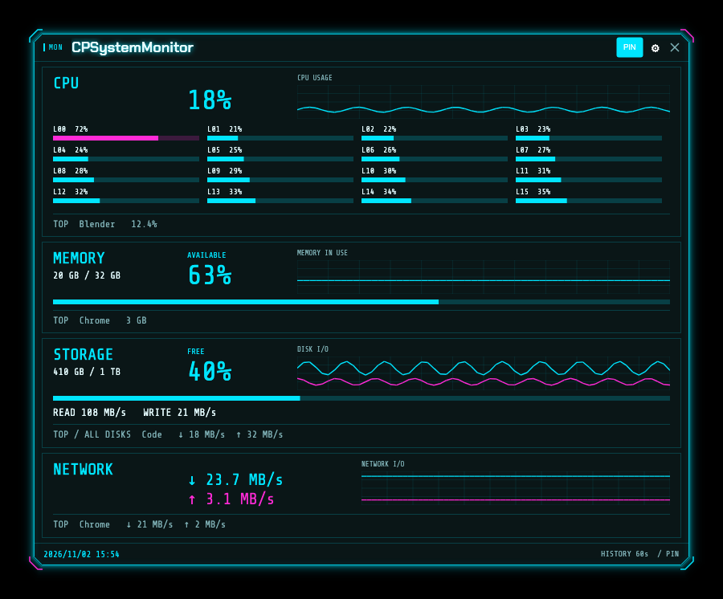

CPU and per-core load
See total usage and individual logical CPU meters.
Your system. At a glance.
Keep CPU, memory, disk and network activity on your desktop. Choose what you see, in a layout that fits your work.

Latest release: v0.1.0
For Intel and AMD PCs. Windows 10 (1809+) / 11.
For ARM64 PCs, including Snapdragon. Windows 11.
macOS 15+. Apple silicon (M1 or later) only. Intel Macs are not supported.
See total usage and individual logical CPU meters.
Available capacity, percentage and usage history.
Keep read/write and receive/send rates visible.
Switch views and toggle sections, graphs and top apps.
Enable disk and network app attribution in Advanced settings. Windows requires administrator permission. Unavailable top-app rows are hidden. Capacity refers to the selected volume; storage top apps are ranked across all disks. On macOS, disk rates cover the backing physical disks. Memory accounting differs by OS, and VPN or bridge traffic may overlap.
Choose x64 or ARM64 for your PC and extract the complete folder.
Keep uiohook.dll next to the executable.
Login startup is off by default and can be enabled in Settings.
Move CPSystemMonitor.app into Applications.
This build is ad-hoc signed and is not notarized by Apple. After verifying the source, allow the first launch in System Settings → Privacy & Security if needed.
For global keyboard and mouse triggers, follow the Accessibility permission guide in Settings.
Copyright © 2026 PalmJoy · GPL-3.0-only
Free to use, modify and redistribute under the license terms.